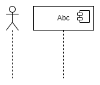
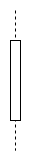
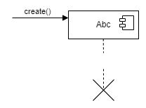
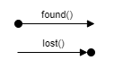
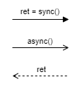
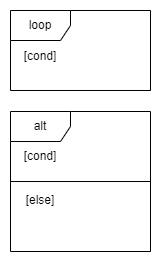

Sequence Diagram
A sequence diagram shows process interactions arranged in a time sequence. The diagram depicts the processes and objects involved and the sequence of messages exchanged as needed to carry out the functionality.
For a particular scenario of a use case, the diagrams show the events that external actors generate, their order, and possible inter-system events.
Sequence diagrams are also known as interaction diagrams.
Diagram Model
Name |
Graphical Representation |
Description |
|---|---|---|
Lifeline |
 | Defines one individual participant in an interaction. This can be an actor, component, class, etc. Participant lifelines are placed side by side horizontally. Time is passing vertically from top to bottom. |
Activation Bar |
 | The activation bar denotes the active lifetime of the participant. The dotted line above and below specifies the passive lifetime of the participant. |
Creating and Termination |
 | Some participants are created or deleted during the specified use case.
|
Found and Lost |
 |
|
Message |
 | Messages are modelled with horizontal arrows.
|
Combined Fragments |
 | Combined fragments, also called frames, can be used with the following types:
The interaction operator is depicted in the upper left of the combined fragment. Additional information, like conditions, are denoted in square brackets. |
{kind=link}
{kind=link}
{kind=link}
{kind=link}
{kind=link}
{kind=link}
{kind=link}